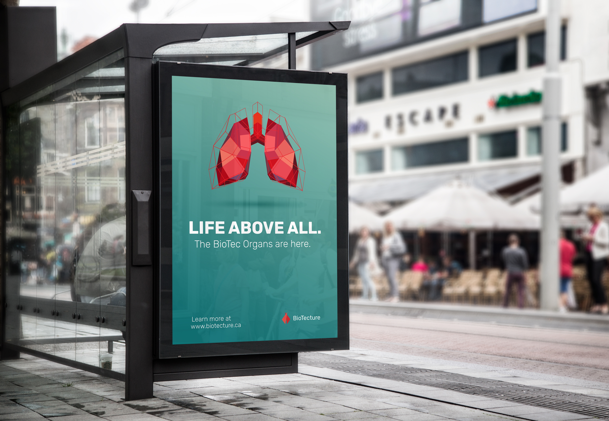
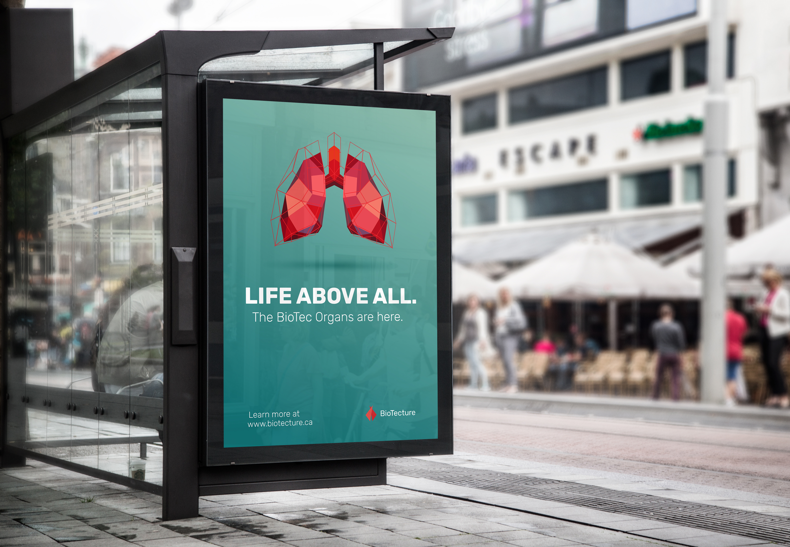

Using Adobe Photoshop, Illustrator, and XD, I designed BioTecture’s high-fidelity mobile and desktop wireframes in a way that users can take any information as they can while avoiding overcrowding the interface. It is modern yet clean. I focused on relaying an easy 3-step explanation of what the process is and how they can benefit from it. Due to our time, I designed a one-page scrolling website where they can learn more about the process, the lab, and the ways to contribute.
 
